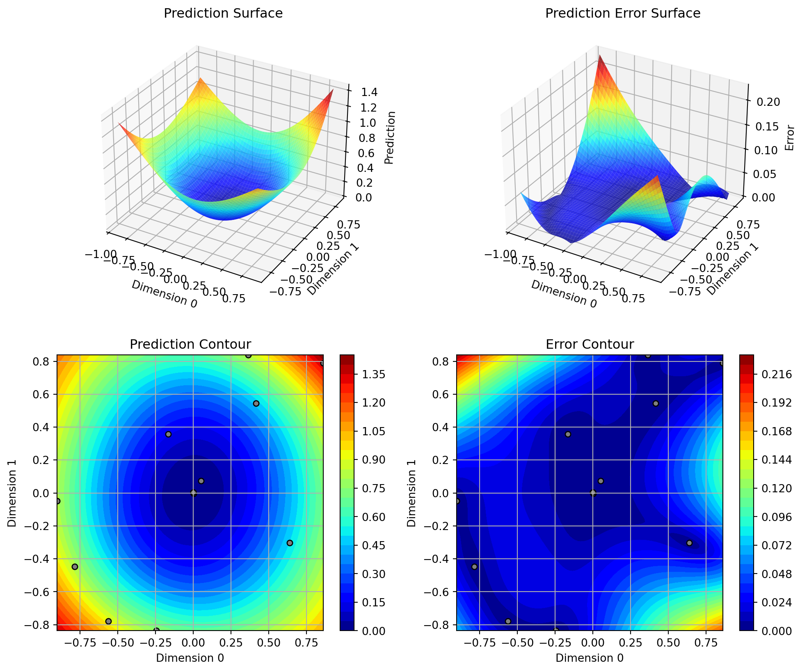
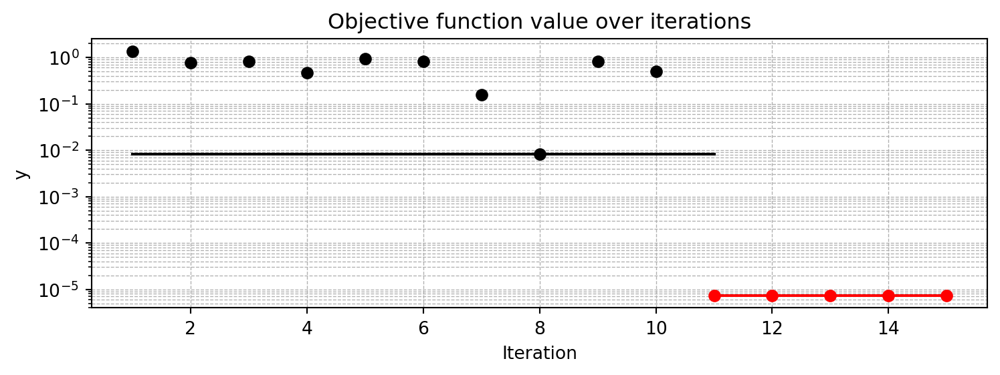
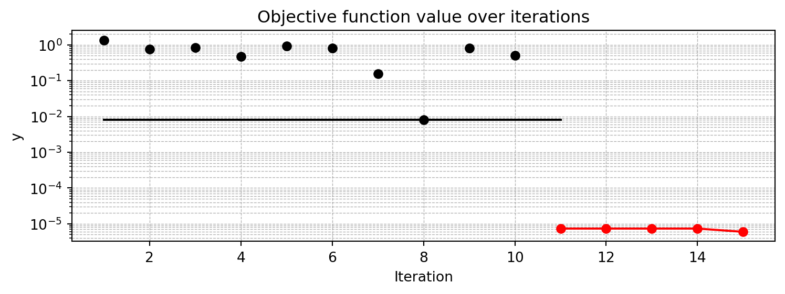
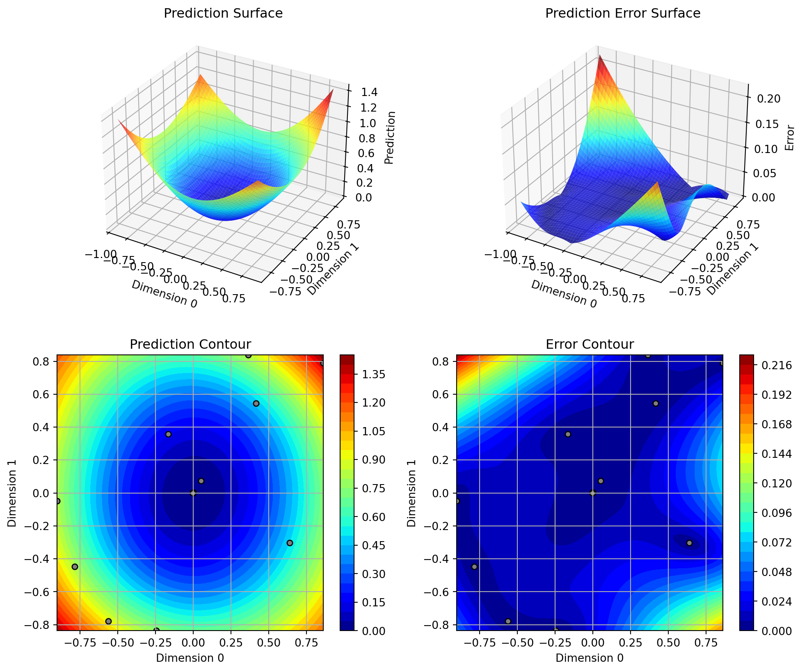

import numpy as np
from math import inf
from spotPython.fun.objectivefunctions import analytical
from spotPython.spot import spot
from spotPython.utils.init import fun_control_init, surrogate_control_init
PREFIX="015"15 Kriging with Varying Correlation-p
This chapter illustrates the difference between Kriging models with varying p. The difference is illustrated with the help of the spotPython package.
15.1 Example: Spot Surrogate and the 2-dim Sphere Function
15.1.1 The Objective Function: 2-dim Sphere
- The
spotPythonpackage provides several classes of objective functions. - We will use an analytical objective function, i.e., a function that can be described by a (closed) formula: \[f(x, y) = x^2 + y^2\]
- The size of the
lowerbound vector determines the problem dimension. - Here we will use
np.array([-1, -1]), i.e., a two-dim function.
fun = analytical().fun_sphere
fun_control = fun_control_init(PREFIX=PREFIX,
lower = np.array([-1, -1]),
upper = np.array([1, 1]))Created spot_tensorboard_path: runs/spot_logs/015_maans14_2024-03-19_22-54-01 for SummaryWriter()- Although the default
spotsurrogate model is an isotropic Kriging model, we will explicitly set thethetaparameter to a value of1for both dimensions. This is done to illustrate the difference between isotropic and anisotropic Kriging models.
surrogate_control=surrogate_control_init(n_p=1,
p_val=2.0,)spot_2 = spot.Spot(fun=fun,
fun_control=fun_control,
surrogate_control=surrogate_control)
spot_2.run()spotPython tuning: 1.801603872454505e-05 [#######---] 73.33%
spotPython tuning: 1.801603872454505e-05 [########--] 80.00%
spotPython tuning: 1.801603872454505e-05 [#########-] 86.67%
spotPython tuning: 1.801603872454505e-05 [#########-] 93.33%
spotPython tuning: 1.801603872454505e-05 [##########] 100.00% Done...
<spotPython.spot.spot.Spot at 0x3a5458950>15.1.2 Results
spot_2.print_results()min y: 1.801603872454505e-05
x0: 0.0019077911677074135
x1: 0.003791618596979743[['x0', 0.0019077911677074135], ['x1', 0.003791618596979743]]spot_2.plot_progress(log_y=True)
spot_2.surrogate.plot()
15.2 Example With Modified p
- We can use set
pto a value other than2to obtain a different Kriging model.
surrogate_control = surrogate_control_init(n_p=1,
p_val=1.0)
spot_2_p1= spot.Spot(fun=fun,
fun_control=fun_control,
surrogate_control=surrogate_control)
spot_2_p1.run()spotPython tuning: 1.801603872454505e-05 [#######---] 73.33%
spotPython tuning: 1.801603872454505e-05 [########--] 80.00%
spotPython tuning: 1.801603872454505e-05 [#########-] 86.67%
spotPython tuning: 1.801603872454505e-05 [#########-] 93.33%
spotPython tuning: 1.801603872454505e-05 [##########] 100.00% Done...
<spotPython.spot.spot.Spot at 0x3a5604c50>- The search progress of the optimization with the anisotropic model can be visualized:
spot_2_p1.plot_progress(log_y=True)
spot_2_p1.print_results()min y: 1.801603872454505e-05
x0: 0.0019077911677074135
x1: 0.003791618596979743[['x0', 0.0019077911677074135], ['x1', 0.003791618596979743]]spot_2_p1.surrogate.plot()
15.2.1 Taking a Look at the p Values
15.2.1.1 p Values from the spot Model
- We can check, which
pvalues thespotmodel has used: - The
pvalues from the surrogate can be printed as follows:
spot_2_p1.surrogate.parray([1.])- Since the surrogate from the isotropic setting was stored as
spot_2, we can also take a look at thethetavalue from this model:
spot_2.surrogate.parray([2.])15.3 Optimization of the p Values
surrogate_control = surrogate_control_init(n_p=1,
optim_p=True)
spot_2_pm= spot.Spot(fun=fun,
fun_control=fun_control,
surrogate_control=surrogate_control)
spot_2_pm.run()spotPython tuning: 1.893023485380876e-05 [#######---] 73.33%
spotPython tuning: 1.893023485380876e-05 [########--] 80.00%
spotPython tuning: 1.893023485380876e-05 [#########-] 86.67%
spotPython tuning: 1.893023485380876e-05 [#########-] 93.33%
spotPython tuning: 1.893023485380876e-05 [##########] 100.00% Done...
<spotPython.spot.spot.Spot at 0x3a610c4d0>spot_2_pm.plot_progress(log_y=True)
spot_2_pm.print_results()min y: 1.893023485380876e-05
x0: 0.0017549984724977892
x1: 0.003981232876300906[['x0', 0.0017549984724977892], ['x1', 0.003981232876300906]]spot_2_pm.surrogate.plot()spot_2_pm.surrogate.parray([1.77398298])15.4 Optimization of Multiple p Values
surrogate_control = surrogate_control_init(n_p=2,
optim_p=True)
spot_2_pmo= spot.Spot(fun=fun,
fun_control=fun_control,
surrogate_control=surrogate_control)
spot_2_pmo.run()spotPython tuning: 2.162397189403005e-05 [#######---] 73.33%
spotPython tuning: 2.162397189403005e-05 [########--] 80.00%
spotPython tuning: 2.162397189403005e-05 [#########-] 86.67%
spotPython tuning: 2.162397189403005e-05 [#########-] 93.33%
spotPython tuning: 2.162397189403005e-05 [##########] 100.00% Done...
<spotPython.spot.spot.Spot at 0x3a8ac2890>spot_2_pmo.plot_progress(log_y=True)spot_2_pmo.print_results()min y: 2.162397189403005e-05
x0: 0.0018245082309241386
x1: 0.00427728203527896[['x0', 0.0018245082309241386], ['x1', 0.00427728203527896]]spot_2_pmo.surrogate.plot()
spot_2_pmo.surrogate.parray([1.09037777, 1.76346322])15.5 Exercises
15.5.1 fun_branin
- Describe the function.
- The input dimension is
2. The search range is \(-5 \leq x_1 \leq 10\) and \(0 \leq x_2 \leq 15\).
- The input dimension is
- Compare the results from
spotPythonruns with different options forp. - Modify the termination criterion: instead of the number of evaluations (which is specified via
fun_evals), the time should be used as the termination criterion. This can be done as follows (max_time=1specifies a run time of one minute):
fun_evals=inf,
max_time=1,15.5.2 fun_sin_cos
- Describe the function.
- The input dimension is
2. The search range is \(-2\pi \leq x_1 \leq 2\pi\) and \(-2\pi \leq x_2 \leq 2\pi\).
- The input dimension is
- Compare the results from
spotPythonrun a) with isotropic and b) anisotropic surrogate models. - Modify the termination criterion (
max_timeinstead offun_evals) as described forfun_branin.
15.5.3 fun_runge
- Describe the function.
- The input dimension is
2. The search range is \(-5 \leq x_1 \leq 5\) and \(-5 \leq x_2 \leq 5\).
- The input dimension is
- Compare the results from
spotPythonruns with different options forp. - Modify the termination criterion (
max_timeinstead offun_evals) as described forfun_branin.
15.5.4 fun_wingwt
- Describe the function.
- The input dimension is
10. The search ranges are between 0 and 1 (values are mapped internally to their natural bounds).
- The input dimension is
- Compare the results from
spotPythonruns with different options forp. - Modify the termination criterion (
max_timeinstead offun_evals) as described forfun_branin.
15.6 Jupyter Notebook
Note
- The Jupyter-Notebook of this lecture is available on GitHub in the Hyperparameter-Tuning-Cookbook Repository